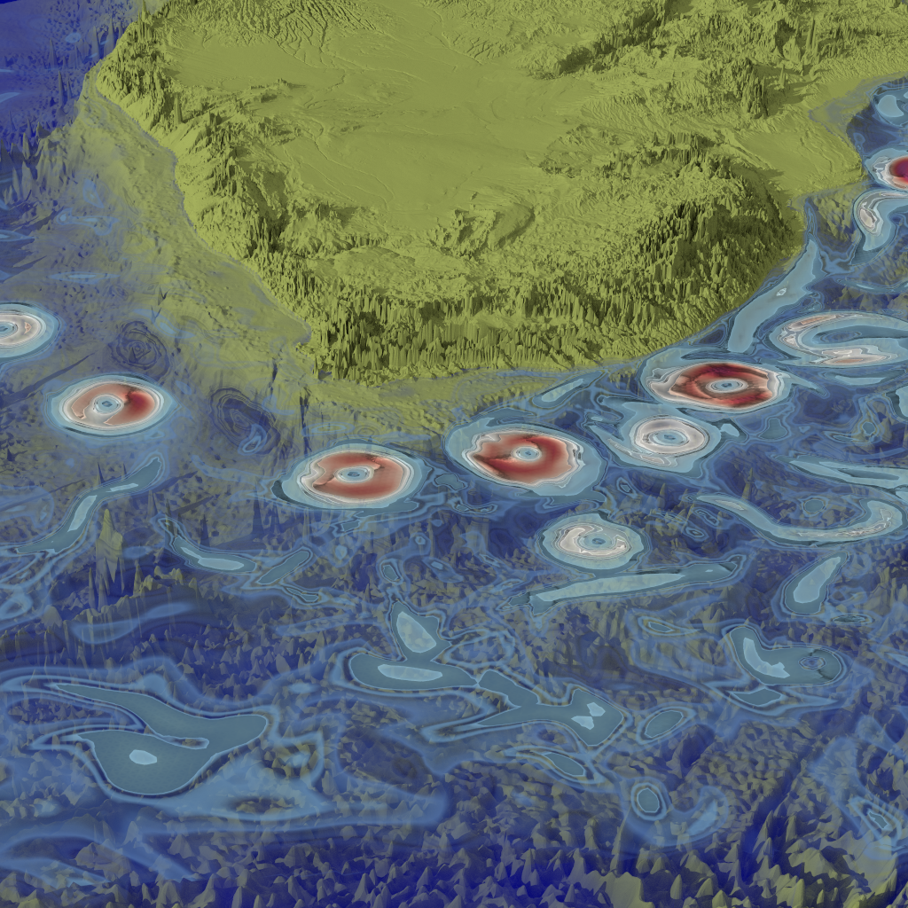
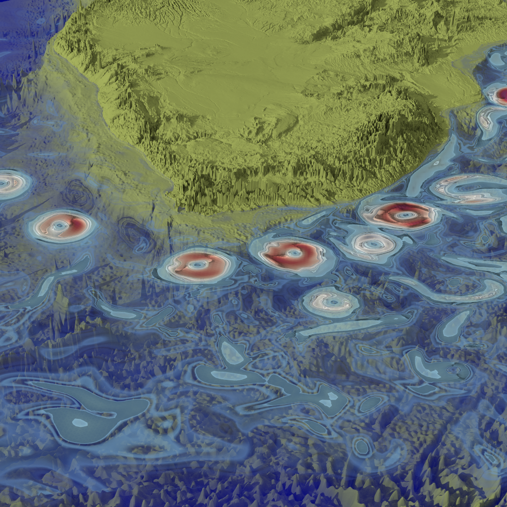

About
I'm Alper Şahıstan a M.Sc. student and teaching asistant at Bilkent University Department of Computer Science . My areas of research include ray-tracing, volume-rendering, visualization and computer graphics. I am also interested in HPC and computational geometry.


 
